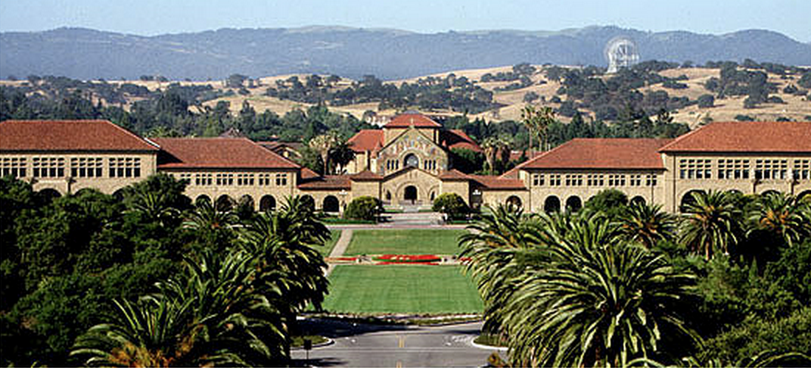
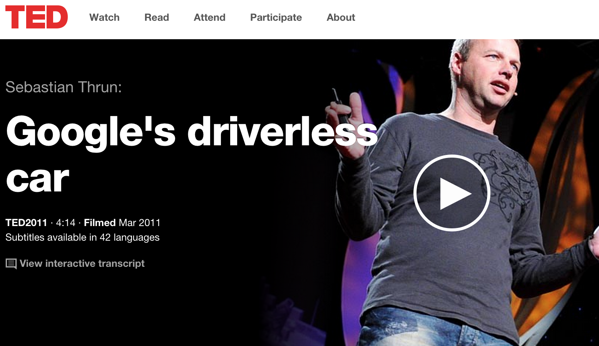
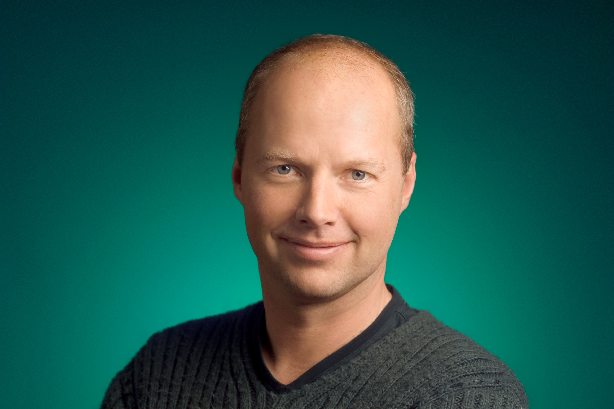
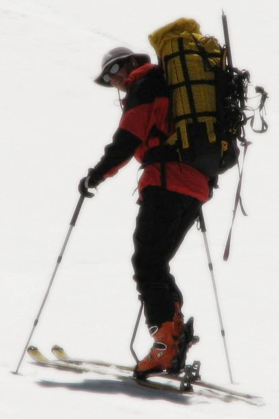

Personal
Professor - Stanford AI Lab

Founder & CEO of Udacity
Founder of Google X

Founder of KittyHawk
About Sebastian

Sebastian Thrun is the CEO of Udacity, a former Google Fellow and VP, and an
Adjunct Professor at Stanford University (formerly fully tenured) & the Georgia Institute of Technology.
He has published over 3700 scientific papers and 11 books, and he is a member of the National
Academy of Engineering in the US. Sebastian works on revolutionizing all of transportation, education, homes, and medical care.
He holds the following honorary doctorates:
Doctor Rerum Natura, University of Bonn, Germany
Doctor Honoris Causa, Delft Technical University, The Netherlands
Doctor Honoris Causa, Instituto Politecnico Nacional, Mexico
Fast Company named Thrun the fifth most creative person in business, and Foreign Policy touted him Global Thinker #4.
At Stanford, Sebastian led the Thrun Lab in creating Google Streetview. Then, at Google, Sebastian founded Google X. He leveraged X to launch projects like the self-driving cars, Google Glass, indoor navigation, Google Brain, Project Wing and Project Loon.
At Udacity, his vision is to democratize higher education. Udacity stands for "we are audacious, for you, the student". His team created the notion of "nanodegrees" which empower people from all traits and ages to find employent in the tech industry.
Select awards and honors
- ALVA Award by 99U, 2013
- The Guardian's Open 20: fighters for internet freedom, 2012
- Global Thinker #4 by Foreign Policy, 2012
- Smithsonian Ingenuity Award, 2012
- The Next Establishment by Vanity Fair, 2012
- Initiative of 2012 Award, by Chip
- Top 100 Scientists on Twitter, 2012
- Huffington Post Best of TED 2011 (#15)
- Fast Company Fifth most creative person in business, 2011
- Inaugural AAAI Ed Feigenbaum Prize, 2011.
- Max Planck Research Award, 2011.
- Crunchie (Annual awards by TechCrunch), Best Technology Achievement, 2011.
- Time Magazine, The 50 Best Inventions of 2010
- IEEE ITSS Distinguished Researcher Award, 2010.
- Smartest People in Tech, Academic Runner-Up, Fortune, 2010.
- Braunschweig Research Prize, 2007.
- Member, Deutsche Akademie der Naturforscher Leopoldina (German Academy of Sciences).
- Member, National Academy of Engineering, 2007.
- Scientific American 50 (list of 50 technology and policy leaders), 2006.
- World Technology Award (Category: IT Software), also World Technology Network Fellow; 2006.
- Elected ECCAI Fellow, 2006.
- Elected AAAI Fellow, 2006.
- Forbes Magazine "E-Gang" (list of 7 technology leaders), 2006.
- Vance D. and Arlene C. Coffman Endowed Faculty Scholar, 2006.
- Team Leader of the team that won the DARPA Grand Challenge.
- "Brilliant Ten" by Popular Science, 2005.
- Best paper award, International Conference of Field and Service Robotics (FSR), 2003.
- Best paper award, IEEE International Conference on Robotics and Automation (ICRA), 2003.
- Best paper award, Second International Joint Confernce on Autonomous Agents and Multiagent Systems (AAMAS), 2003.
- Finmeccanica Endowed Chair, School of Computer Science, CMU, 2002.
- Olympus Award of the German Society for Pattern Recognition (DAGM), 2001.
- DARPA Distinguished Contractor Award, 2001.
- Best paper award, IEEE International Conference on Robotics and Automation (ICRA), 2000.
- Best paper award, German Conference of the Deutsche Arbeitsgemeinschaft fuer Mustererkennung (German Society for Pattern Recognition), 1999.
- NSF CAREER Award, March 1999--February 2003.
- Best paper award, National Conference on Artificial Intelligence (AAAI), 1998.
A
detailed Curriculum Vitae is also available.
Check out Sebastian's
Scientific Genealogy, from the
Mathematics Genealogy Project.
Travel

A B-17 Flight (images from a 2009 flight on a B-17).
Chile (images from a 2009 trip to Chile).
Seoul + Mt Fuji (images from a 2003 trip to Asia).
New Zealand (images from a 2003 trip to New Zealand).
sabbatical.thrun.org (images from my sabbatical).
lyon.thrun.org (29 images from a recent trip to Lyon)
peru.thrun.org (185 images from a recent trip to Peru)
mexico.thrun.org (82 images from a recent trip to Mexico)
brazil.thrun.org (97 images from a recent trip to Brazil)
israel.thrun.org (40 images from a recent trip to Israel)
paris.thrun.org (15 images from a recent trip to Paris)